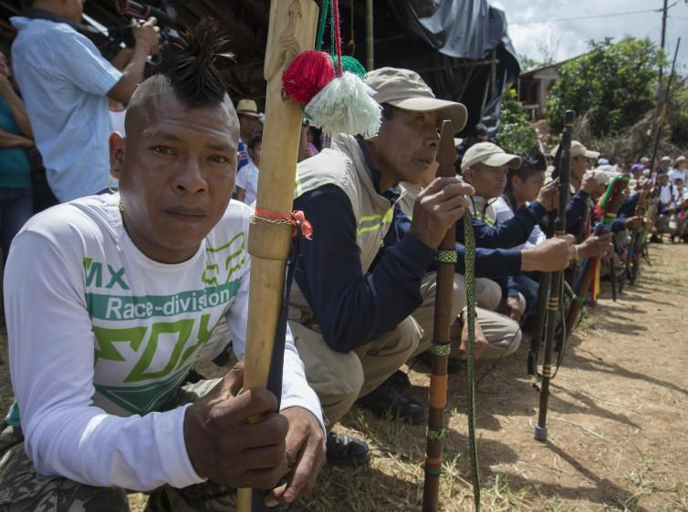

OBJETIVO
Ya hay un amplio reconocimiento y en cual se busca proteger de manera especial los valores culturales y sociales encarnados en las comunidades indígenas que aún subsisten en el país. Al no contarse con la comunidad se desconocieron los esfuerzos que está hizo para la consecución del terreno y las mejoras en el hechas, cuestión está que lleva a pesar en un aprovechamiento indebido de las condiciones de inferioridad de los indígenas
Por cuanto respecta al texto constitucional, la importancia de estos valores se pone de presente de manera directa en el artículo 7 que reconoce y protege la diversidad étnica y cultural de la nación colombiana; en el artículo 8 sobre la obligación del Estado de proteger la riqueza cultural de la nación; en el artículo 9 sobre respeto a la autodeterminación de los pueblos; en el artículo 68 inciso quinto, sobre derecho al respeto de la identidad en materia educativa; en el artículo 70, relacionado con la cultura como fundamento de la nacionalidad colombiana y el reconocimiento por parte del Estado de la igualdad y dignidad de todas las culturas que conviven en el país, así como la promoción de la investigación, de la ciencia, del desarrollo y de la difusión de todos los valores culturales de la nación y en el artículo 72, sobre protección del patrimonio arqueológico de la nación.
Donde se determinan ciertos conceptos importantes para resaltar valores culturales y sociales de estas comunidades minoritarias; identificando, aceptando y respetando la multiculturalidad de los grupos minoritarios asentado en el territorio colombiano:
"velar porque, siempre que haya lugar, se efectúen estudios, en cooperación con los pueblos interesados, a fin de evaluar la incidencia social, espiritual y cultural y sobre el medio ambiente que las actividades de desarrollo previstas puedan tener sobre los pueblos".
"La explotación de los recursos naturales en los territorios indígenas se hará sin desmedro de la integridad cultural, social y económica de las comunidades indígenas. En las decisiones que se adopten respecto de dicha explotación, el Gobierno propiciará la participación de los representantes de las respectivas comunidades"
"Desde el punto de vista cultural las obras se realizarán sin tener en cuenta o consultar previamente a la máxima autoridad indígena del lugar como lo era el gobernador del Cabildo, hecho esté que lleva a concluir que tanto el ministerio como el contratista desconocieron el régimen civil y de territorio que tenía la comunidad, interpretando esto como violación de los derechos culturales de la comunidad".
Según esto, si bien se trata de dos intereses colectivos, es evidente que desde el punto de vista del derecho en el que se funda cada interés, las pretensiones de comunidad indígena poseen un mayor peso. Mientras que su interés se funda en el derecho a la propiedad, al trabajo y al mantenimiento de su integridad étnica y cultural, el interés del resto de la comunidad está respaldado en el derecho a la terminación de una obra concebida para el beneficio económico de la región.
SUBJETIVO
Un hecho importante dentro de la Asamblea Nacional Constituyente fue la presencia de los indígenas y las propuestas en materia de derechos étnicos y culturales, el reconocimiento y la protección de sus valores y derechos, como parte de una sociedad caracterizada por la diversidad étnica y cultural.
La nación colombiana tiene derecho a que se le defina como ella es y no como una mera abstracción jurídica, nos hemos propuesto, al venir aquí, dejar siglos enteros de negar lo que somos y avanzar unidos en el autodescubrimiento de nuestra identidad, es esa presencia de diversidad cultural, reconocida y no desconocida, promovida y no avasallada la que puede llegar a constituirse en la mejor barrera para la intolerancia en que se enraízan los comportamientos más violentos.
Dentro del panorama de inseguridad, de falta de trabajo, de tierra y conocimientos, de corrupción política, de secuestro del poder, plagas estas que afrontamos los indígenas además de la discriminación por ser distintos a los demás, porque pensamos diferente, sentimos diferente, actuamos diferente. Por eso reclamamos el reconocimiento de la diversidad.
